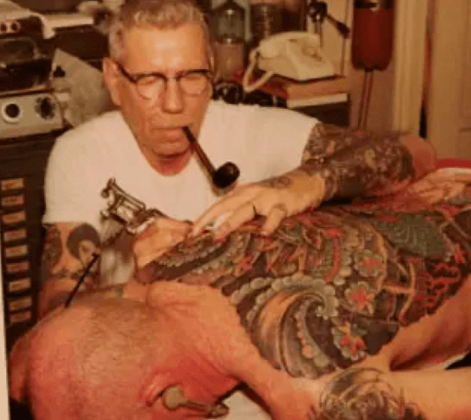

Historie
Historien om Old School (American Traditional) tatoveringer er en fortælling om havnebyer, sømænd, oprørere og håndværkere. Det var en stilart, der opstod ud af en rå subkultur og voksede til at blive grundstenen for moderne vestlig tatoveringskunst.
Rødderne: Rejserne over Stillehavet
Det hele tog fart i 1700-tallet, da vestlige søfolk sejlede til Stillehavsøerne og tog den polynesiske tatau-kunst med sig hjem. For sømænd og soldater var blækket ikke bare pynt. De bar motiverne som beskyttelse mod skibsbrud, som påmindelser om dem derhjemme og som en barsk nødvendighed. Hvis en mand mistede livet på havet eller i slagmarkens mudder, var hans tatoveringer ofte det eneste, der kunne identificere ham.
Legenden i Honolulu
Da Anden Verdenskrig brød ud, eksploderede efterspørgslen. Unge mænd på vej i kamp strømmede til salonerne på Hawaii, hvor Norman "Sailor Jerry" Collins forfinede håndværket. Han blandede vestlig sømandssymbolik med japansk træsnitkunst, udviklede sine egne klare farver og skar de ikoniske, fede linjer. Hans tilgang var kontant: Bold Will Hold. En tatovering skulle bygges til at overleve alt.
Fra oprør til tidløs klassiker
Efter krigen ramte motiverne rockabilly-miljøet, bikerne og punkerne. Det blev et tegn på frihed og et valg om at gå sine egne veje. I dag er Old School ikke en forbigående trend, men fundamentet for al moderne kropskunst. Det er ærligt, ikonisk og skabt til at holde hele livet.
